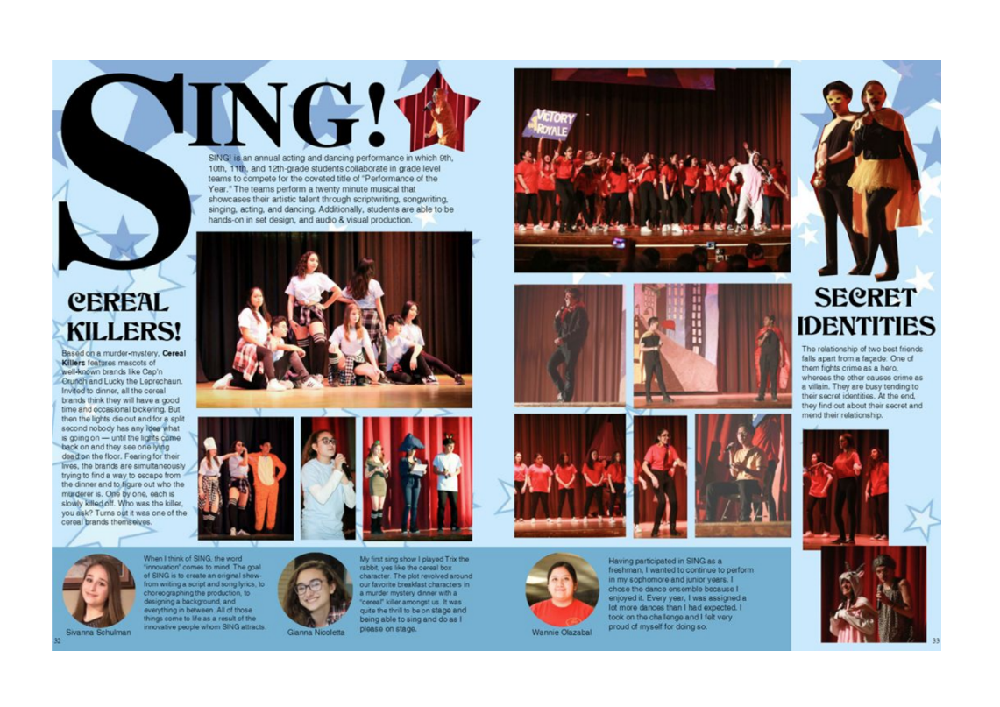
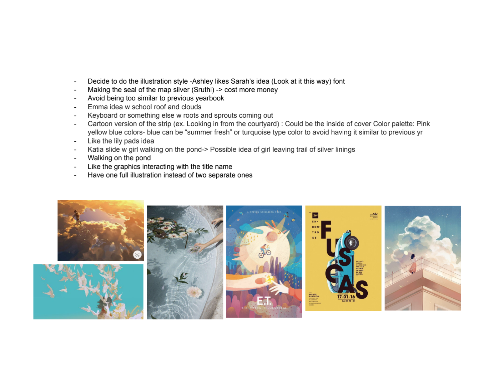
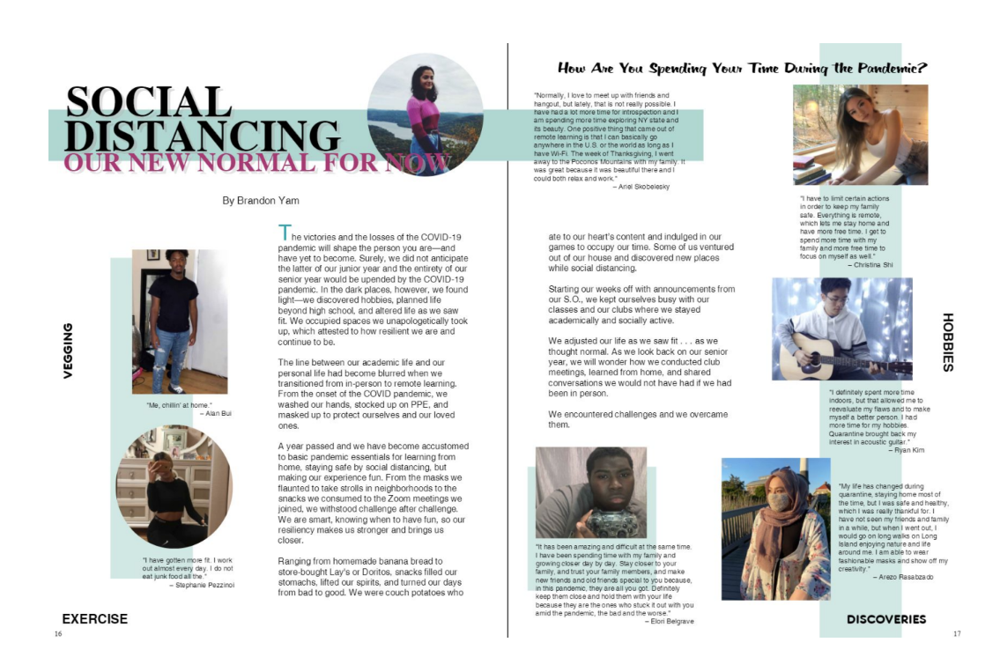
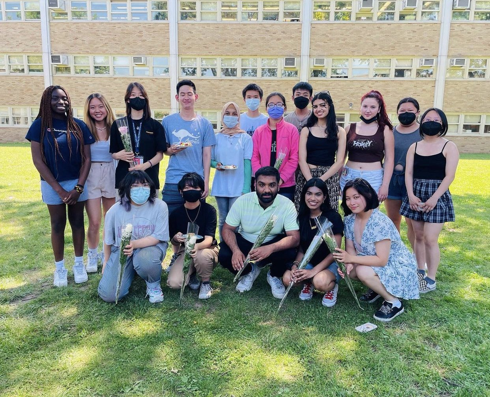

A year of memories, competing for space.
The yearbook needed to represent many people and events while staying visually coherent and easy to navigate.
Editorial systems · 2024
Collaborative publication work combining layout, image hierarchy, revision, and production coordination.

The yearbook needed to represent many people and events while staying visually coherent and easy to navigate.
I contributed to page layouts, image selection, content hierarchy, and collaborative review across the publication process.
I balanced photography with text, refined spacing and focal points, and used feedback to improve consistency from spread to spread.
The project strengthened my editorial judgment and taught me how to maintain a visual system while coordinating many contributors, deadlines, and details.


